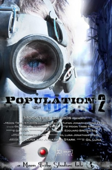

Country:United States, 82 minutes
Spoken languages:
Genres:Drama, Sci-Fi
Director(s):Gil Luna
Writer(s):Gil Luna
Video Codec:Unknown
Number: 1668


Certification:
Storyline:
Set against the backdrop of a post-Apocalypse Earth, Population 2 is about a relationship that ends in tragedy forcing a woman to struggle in the aftermath.
Cast:

Medium: Original DVD,
Comments: Part of: 5 Disaster Collection
Loaned: No
Aspect ratio: Unknown